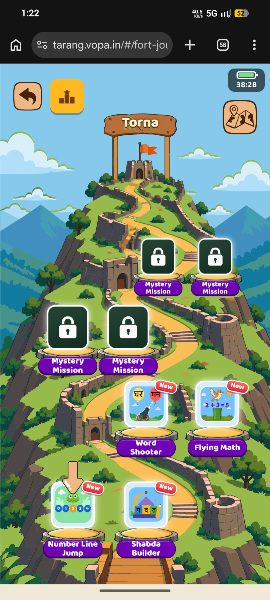
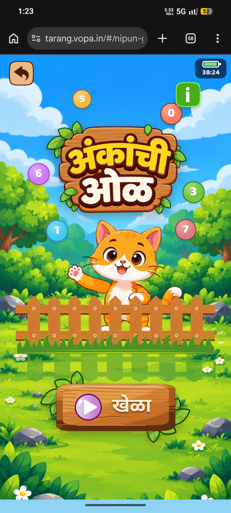
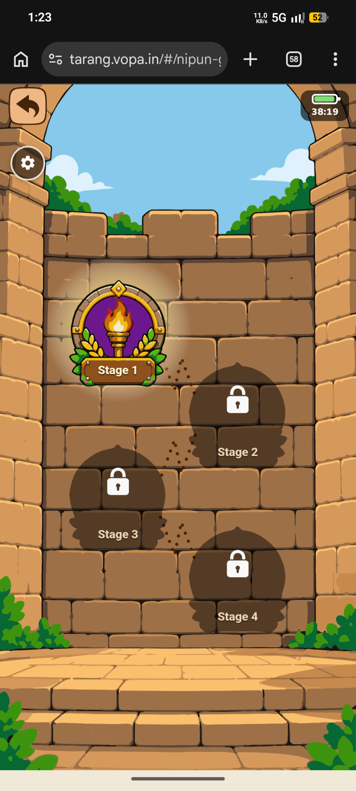

Original Reference Images
Seven user-supplied Tarang / VOPA screens, preserved in attachment order. Tap any image to enlarge it, browse the set or download the original.
World journey map

What is visible
A tall illustrated landscape connects labelled forts with a dotted route. Torna is colourful and highlighted; Rajgad, Sinhagad, Pratapgad and Panhala are grey. Shivneri and Raigad have visible “Illustration unavailable” panels. Rivers, mountains, trees and clouds frame the route.
Visual and layout details
Green land, blue water, warm wooden signs and stone structures create a storybook exploration mood. A large arrow focuses attention on the active location; colour contrast separates it from the rest. The route supplies visual continuity down a long portrait screen.
What we could adapt
Borrow the idea of a small, readable journey with one obvious next destination. A garden version could use an orchard, shape meadow and memory grove; a fort version would need newly authored art. Keep a list alternative so a child does not have to understand the map to start.
Limits and cautions
The grey treatment suggests unavailable destinations, but the exact unlock rules are unknown. Missing-illustration cards are defects to avoid, not target artwork. The screenshot does not establish map animation, scrolling behaviour or learning outcomes.
Torna activity hub


What is visible
A winding path climbs an illustrated fort. Four lower activity tiles are labelled Number Line Jump, Shabda Builder, Word Shooter and Flying Math, each carrying a New badge. Four higher tiles show locks and Mystery Mission. Back, podium and map icons sit near the top.
Visual and layout details
Large square illustrations sit on circular plinths with purple nameplates. The path supplies depth and connects otherwise separate mini-games. The fort title crowns the composition while the lower-left arrow marks a likely starting point.
What we could adapt
Use one themed hub for distinct activities, with a clear image, readable name and one-tap entry. Show only activities actually implemented for the chosen concept. If future content is teased, clearly mark it as planned rather than presenting a broken playable button.
Limits and cautions
Only the labels and screen arrangement are observed. The screenshot cannot establish how those other games play, whether badges expire, how locks open or what the podium icon actually does. Do not copy Tarang game art, title graphics or code.
Number-line title screen


What is visible
The Marathi title is mounted on a leafy wooden sign. An orange cat waves from behind a fence, with floating numbered circles around it. A prominent wooden Play button sits below; back and information icons remain secondary.
Visual and layout details
Bright sky, layered green foliage, a friendly oversized mascot, thick outlines and warm wood create a playful focal hierarchy: title, character, then action. The title is rendered as artwork rather than ordinary paragraph text.
What we could adapt
Create an original mascot and title treatment for the eventual original game. Keep a single large Play action, with help available but less prominent. Reserve enough space for reviewed Marathi or Hindi text rather than shrinking translated labels.
Limits and cautions
This is reference art, not a usable sprite pack. Recreate the design principles using original assets, not traced branding or the same cat. A still image is not proof of animation, working navigation or accessible text.
Stage-selection wall


What is visible
Inside a stone arch, Stage 1 has a colourful torch-and-laurel badge. Stages 2–4 use dark silhouettes with white locks, connected by a dotted zigzag route. A back button and gear icon are visible.
Visual and layout details
The consistent badge silhouette contrasts a detailed active stage with simplified future stages. Stone blocks support the fort theme, while generous vertical spacing reduces accidental selection.
What we could adapt
A later progression screen could use three short stages per skill, with completed/current/next states and replay. Start with one verified activity before building a large locked map. Use icons and text as well as colour for state.
Limits and cautions
The unlock conditions, number of questions per stage and persistence are not visible. Do not turn the starter’s completed-visit counters into a claim of mastery. Decide whether locking helps the intended learners before implementing it.
Illustrated how-to-play

What is visible
A Marathi how-to heading introduces four numbered cream panels. The panels illustrate hearing/reading a question, selecting a number, receiving correct feedback and trying again after a mistake. Speaker icons, a cat mascot, connecting arrows and a bottom Play action are visible.
Visual and layout details
The blurred garden keeps attention on foreground instruction cards. Each numbered step combines a short instruction with a concrete UI example. Contrasting badges and arrows establish reading order.
What we could adapt
Provide a short interactive practice round before independent play: hear/read the prompt, try a choice, see helpful feedback, then continue. Keep instructions replayable. Use real interface examples and text equivalents for any spoken guidance.
Limits and cautions
Speaker icons indicate intended audio controls, not verified playback, language quality or accessibility. The pictured meter is part of an example; its runtime rules are unknown. The earlier prototype has feedback sounds but no narration yet.
Side menu and account navigation

What is visible
A cream drawer covers most of the screen. Its brown header shows an S badge, the display name Sheesshh and Level 1, with a close button. Three large rows are labelled My Profile, Leaderboard and Settings. The underlying scene is dimmed.
Visual and layout details
Large stacked rows, left icons, right chevrons and a clear close action create a conventional secondary-navigation surface. Brown outlines, cream fills and gold accents maintain the game’s visual language.
What we could adapt
Borrow the simple drawer pattern only for necessary controls: sound, help, language when implemented, and a grown-up area. Preserve the current activity when closing it. Keep a clear exit/back path and large touch targets.
Limits and cautions
The displayed profile belongs to the supplied reference, not a feature specification. Profiles, child accounts, cloud sync and leaderboards are not in the earlier prototype and are not approved additions. Do not treat a visible level as proof of a ranking system or copy the user’s profile into new functionality.
Number-line gameplay

What is visible
The Marathi prompt asks which number comes after 4. A fence number line shows 2, 3, 4, a question mark, 6, 7 and 8; the offered choices are 4, 5 and 6. A cat appears behind the fence. The top strip contains stage-like dots and three hearts; a speaker button sits beside the question.
Visual and layout details
A single question is separated from the answer tray. The fence grounds abstract numbers in a tangible sequence; the missing position is visually emphasized. Large purple answer circles contrast with warm wood and the green garden.
What we could adapt
Consider a new Number Path activity if number-order practice fits the selected concept: identify a missing or next number, choose among three distinct answers, animate an original mascot toward the correct spot and give a useful hint after mistakes. Show the number relationship, not just a right/wrong badge.
Limits and cautions
This Number Path game is proposed, not present in the three-game starter. Hearts are visible but their penalty/recovery rules are unverified; avoid punitive lives in the initial learning prototype. The green battery-shaped 38:xx indicator’s meaning is unknown. Phone status, browser controls and gesture bar are not game UI.
Patterns worth carrying forward
- A single obvious next action; large, distinct touch targets.
- Consistent visual language across hub, title, help and gameplay.
- An illustrated learning task rather than a plain worksheet.
- Feedback that explains and encourages another attempt.
- Original art with separate layers, readable text and accessible alternatives.
Source and preservation
Supplied by the owner on 25 October 2026 UTC. The visible source domain is tarang.vopa.in; the live site was not re-tested for this gallery. Originals include Android/Chrome controls and a gesture bar. These are not game controls. The green battery-shaped in-page indicator is visible, but its exact meaning is unknown.
No screenshots were cropped, recoloured or retouched. Original filenames and SHA-256 checksums are saved in the reference manifest. Image order follows the message, so the side-menu screen precedes gameplay despite its higher original filename.